学的方向叫嵌入式，玩了这么多年单片机，从STC89C52到Arduino到STM32到S3C2440，再到树莓派，哪样没玩过。如今突然写一篇讲解搭建51单片机最小系统的博客，着实略显奇异。
我觉得这就是学习的螺旋曲线吧，当转了一圈，又回到了“起点”，只是这个起点，比上次那个起点高了不少。虽然之前弄过很多很多的开发板，但是基本都是软件方面的开发，而且用的硬件都是现成焊接好的。尽管以后基本也是走嵌入式软件方向，但是，硬件也总归需要懂那么一些吧，多多益善总是好的(ˉ▽￣～) ~~
我们以最简单的STC12C2052单片机为例。我之所以喜欢这个单片机，不仅是因为它完全兼容8051单片机，而且是因为它尺寸小！
======================阶段一：原理图========================
先看他的引脚图（STC与AT是兼容的）：
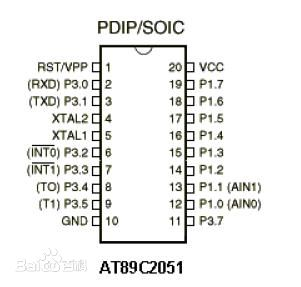
最小系统的连接其实挺简单的，如图：
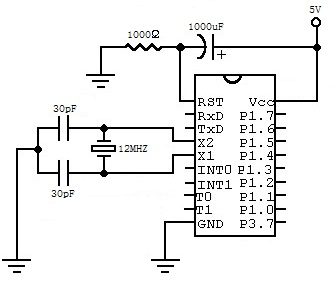
这里面有5个引脚需要连接，分别是Vcc、GND、RST、X1与X2。Vcc和GND是整个单片机的电源引脚，分别接到5V电源和接地。而X1与X2是为单片机提供时钟信号，分别接到一个晶振的两端。为了让晶振起振并且稳定频率，晶振的两端需要用两个30pF左右的电容接地。这两个电容的容值不需要很精确。晶振使用12MHZ的。
有个需要注意的是RST引脚的接法。RST保持两个2个机器周期以上的高电平，将使单片机复位。平时在使用时，RST需要拉低。RST引脚的接法通常如图：
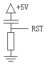
当电源接通时，RST将会从5V逐渐降至0V。只要高电平保持足够的时间，那么就能实现上电复位。对于具体的计算，感兴趣的可以看最后的附注。
这个电阻和电容的取值不是固定的，只要的乘积大于100mFΩ即可。乘积的值越大，复位越可靠，当然，启动时间也就越长。
我这里只有1k电阻和1000uF的电容，乘积是1000mFΩ，足够大了。
======================阶段二：实际操作========================
最终的样子如图：
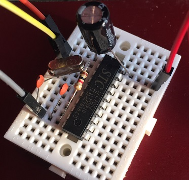
可以用串口下载程序~
所需的材料有：一个面包板，一个STC12C2052，一个1K电阻，一个1000uF电容，两个30pF电容和一个12MHZ晶振。
第一步：把STC12C2052插入面包板，将半圈缺口朝上：
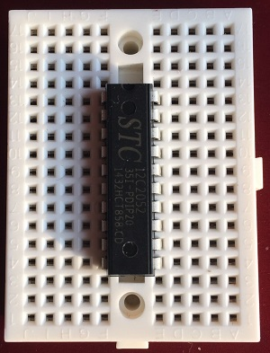
第二步： 插入1000uF电容器。电容器的正极连接Vcc引脚，负极连接RST引脚。注意，长脚为正极，短脚为负极：
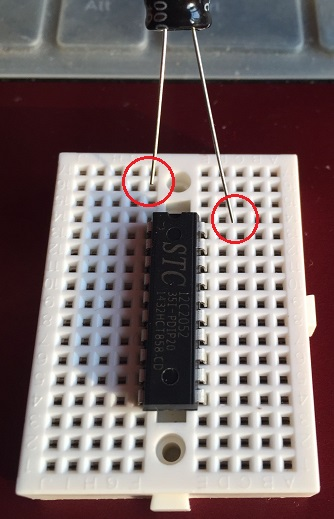
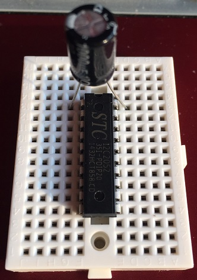
第三步：插入1K电阻。电阻的一端连接着RST引脚，一端连接着GND引脚：
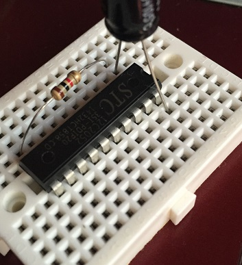
第四步：插入一个30pF电容。电容的一端连接X2引脚（左边从上往下数第4个引脚），一端连接着GND引脚：
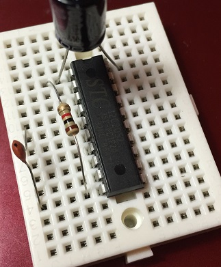
第五步：再插入一个30pF电容。电容的一端连接着X1引脚（左边从上往下数第5个引脚），一端连接着GND引脚：
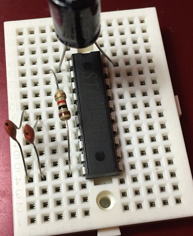
第六步：插入12MHZ晶振。晶振一端连着X1引脚（左边从上往下数第5个引脚），一端连着X2 引脚（左边从上往下数第4个引脚）：
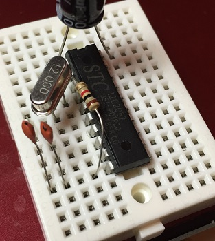
至此，整个最小系统就搭建完了。
=======================阶段三：测试====================
为了验证刚刚搭建好的最小系统是否能够使用，可以写一个简单的程序来验证它。
下面是我写的一个呼吸灯的代码：
#include <reg51.h>
sbit LED=P1^7;
void delay(unsigned int p_ms)
{
unsigned char t_timer;
for(;p_ms>0;p_ms--)
for(t_timer=0;t_timer<250;t_timer++);
}
void light(unsigned int p_on,unsigned int p_off,unsigned int p_loop)
{
while(p_loop>0)
{
LED=0;
delay(p_on);
LED=1;
delay(p_off);
p_loop--;
}
}
void main()
{
while(1)
{
unsigned int t_on;
for(t_on=1;t_on<=20;t_on++)
light(t_on,20-t_on,10);
for(t_on=20;t_on>=1;t_on--)
light(t_on,20-t_on,10);
}
}
需要在P1^7这个引脚上接一个LED。LED的正极通过1K的电阻连接到Vcc，负极连接到P1^7，如图：
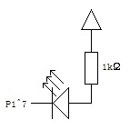
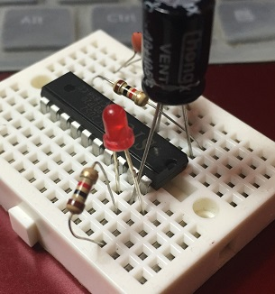
最后与USB-TTL连接。STC12C2052的右边第一个引脚Vcc接USB-TTL的Vcc，左边最后一个引脚GND接USB-TTL的GND，左边第2个引脚RXD接USB-TTL的TXD，左边第3个引脚TXD接USB-TTL的RXD。如图：
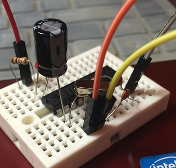
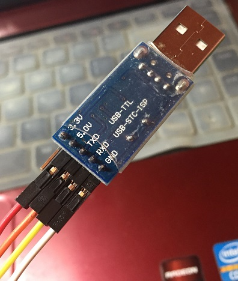
使用Keil把代码编译出hex文件，然后使用STC-ISP把程序下载进去，注意中途需要手动插拔一下电源，以冷启动一下。
应该是能够下载进去，一切顺利的~
======================附注==========================
首先要推导一下上电复位电路中电容与电阻值的计算式。
在这个电路中，设电容的值是C，电阻的值是R，电源的电压是E。以上电的那一刻为0时刻，之后，电阻中的电流设为i，电阻两端的电压设为u。
对于电阻，有恒等式：u / R = i；（1式）
对于电容，有恒等式：∫ i * dt = C * ( E – u )；（2式）
把（1式）代入（2式），消去i，得：
R * C * ( E – u ) = ∫ u * dt；
得u = E * exp ( – t / ( R * C ) )；
可以看出：
（1）随着t增加，u从E开始减小，并且减小速度越来越慢，最终趋于0。
（2）RC乘积越大，那么u下降的就越缓慢。
而u也就是RST引脚的电压。所以，为了让RST引脚保持足够时间的高电平，就需要足够大的RC乘积。这为电阻电容的选型提供了很大的灵活度。
最后要说一下，STC12C2052自带了内部震荡电路和上电复位电路，所以即使什么都不加，只接Vcc和GND也是可以工作的。。。。。。。。。。。。。。。。。。。。。。。。